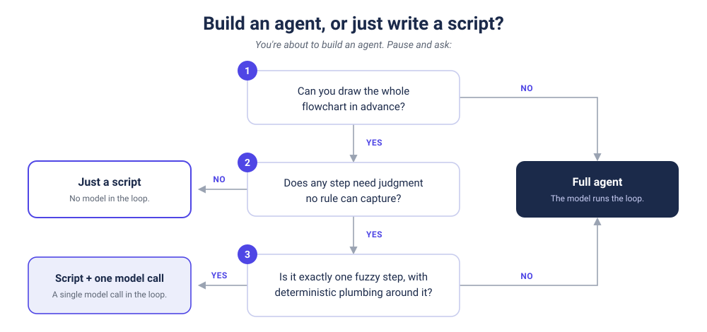

I learned this lesson by building (and rebuilding) an agent to keep up with my kids' schools, reading the board packets and calendars and surfacing the few things that actually touch my family. One early task was deciding when two listings were the same event under different names: "Spring Picnic" here, "Encinal Spring Picnic" there. Obviously a job for intelligence, I figured, so I reached for the intelligent tool and used a semantic embedding model to match them. On short titles it was worse than useless, confidently scoring two unrelated events as identical. What I settled on instead was dumb token overlap, about as far from machine learning as you can get, and it has been right ever since.
I knew the embedding model was overkill. I reached for it anyway, because reaching for the smartest-looking option is the reflex right now, and because building the harder and more impressive version is how you learn. By the third rebuild of this agent, MATILDA, that reflex had flipped. I'd catch a task where the answer was sitting right there in the input, a comparison or a lookup. Don't invoke the LLM, just write the script. The script still lives inside the agent. It just doesn't need a model in the loop to run.
That instinct, knowing which steps deserve a model and which don't, is the thing worth developing this year. Almost nobody has it yet.
Part of why is counterintuitive. The natural-language interface flipped the difficulty gradient: describing an agent in plain English and watching it move now feels more approachable than writing twenty lines of Python. The truth is that the same AI will write those twenty lines for you in seconds, but the semantics of the code are exposed and that can be intimidating. A script is plumbing, and screams at you that you don't know how it works. An agent feels like the future, and buries the black-box complexity underneath friendly prose. We've started preferring the highly complex thing that appears easy to the very straightforward thing that feels cryptic.
Most "agents" are doing one of three jobs
The work comes in three shapes, and I'll start where most people do these days: with the full AI-orchestrated agent. MATILDA runs all three at once (the full build is its own post), which is how I tuned my instinct for these distinctions.
Sometimes only a model will do. The path can't be drawn in advance and the job is reasoning over genuinely ambiguous context. Deciding which update buried in a thousand-page school board packet actually matters to my kids, across their different grades and campuses, is not something I can easily write as a rule. A coding agent finding its way around a repo it has never seen is the same shape. Here the model isn't decoration. It's the only thing that works, and the complexity is earned.
Most of what gets called an agent isn't doing that.
More often, it should be a script with one model call. The orchestration is deterministic and exactly one step is genuinely fuzzy, so it earns a single invocation. When MATILDA sorts a new item under the right topic, the model returns that one decision and a line of code writes it to the state file. The agent isn't deciding what tool to use, the model never touches the state file itself. The mistake here isn't using the model, it's wrapping the whole pipeline in an autonomous loop when 90% of it is plumbing the model should never touch.
And often, a script is all you need. A price monitor that pings you when a number drops is a cron job and a comparison. An inventory alert is if stock < threshold. Inside MATILDA, parsing the calendar feeds and rendering the next ten days is plain date math, with no model anywhere. Wrapping any of this in an agent only adds latency, cost, and a chance of hallucination to a problem that had none of the three.
Strip the gloss off most things labeled an agent and you find a problem fit for one of these last two: a script, or a script with a single model call.

Four ways the heavy tool loses
When an agent does a script's job, it loses on four fronts at once. It costs more, because every step is a GPU-heavy model call standing in for what could be near-free CPU. It runs slower, turning a sub-second operation into ten or thirty seconds of inference time. It's non-deterministic, so the same input can wander down a different path tomorrow. And it's hard to audit, because when it fails you get a plausible-sounding story about what happened instead of a stack trace you can scrutinize.
Those costs don't add up so much as multiply. A pipeline that's 95% reliable at every step is only about 36% reliable across twenty steps. The same chain built deterministically is right and verifiable every time, by construction. Stack enough model calls where you needed none and congrats: you've converted a sure thing into a coin flip.
None of this is speculative. Salesforce spent 2024 as the loudest voice for autonomous agents, then published a reliability guide admitting that prompt-driven agents skip steps, ignore rules, and hallucinate, and built a feature that converts "always" and "never" instructions into deterministic logic that runs every time. Klarna ran a similar arc, rolling automation across customer service and then rehiring people once it was clear the agent was fine for the routine majority of tickets and a liability on the minority that genuinely needed a person. Neither is a story about agents failing. Both are stories about organizations learning they pointed agents at the wrong problem. Even Anthropic, whose business depends on selling models, says this in its own guidance: if a workflow is predictable, encode it as software, and favor simple, composable workflows over elaborate autonomous ones.
Mind the tokenmaxxing trough
AI is a big enough domain to run several hype cycles at once, and we'll live through plenty of them. The one we're tipping into now is the ROI reckoning: the tokenmaxxing day-two where the spend gets scrutinized and the value question turns sharp. You can see it in the restrictions starting to land at companies, often set off by a small number of people burning an enormous number of tokens. Unfortunately, this tightening is arriving before the average person has built a single valuable agent of their own.
That's the part I'd be careful about. The case for leaning into experimentation is real. Burning tokens to build fluency is how a lot of us (me included) got the instinct in the first place, and I'm still doing it. But fluency with the tools and instinct about when to apply them are different skills. Instinct is the one the market is short on. If the correction overshoots, we clamp down before the median person has even started climbing the learning curve.
Over the long run, if Rich Sutton's bitter lesson holds, this guidance will flip. General methods that lean on raw computation tend to beat the clever handcrafted ones over time. Follow it to the end and the script-first instinct is exactly the kind of human cleverness that cheaper compute probably steamrolls eventually. But that's a bet on an environment we're not in yet. Compute is the scarce and expensive resource of this moment, not the free one, and "just throw the model at every problem" is the solution for a future that hasn't arrived. When inference is unconstrained, revisit the question. Until then, know when to reach for the script.
The way through isn't a ban on agents, and it isn't unlimited token spend either. It's the plain discipline of asking, before you build, whether you could just draw the flowchart. MATILDA's first move every morning is a script asking whether anything changed at all; most mornings the answer is no and no model runs. If you can draw the flowchart, just write the script. Save the agent for the problem that genuinely needs one. Knowing which is which will be a real advantage for the individual who has it. Figuring out how to teach and reinforce this across an organization will be a competitive advantage for the companies that pull it off first.
The most important thing to learn in 2026 might be how to build an agent. The second most important thing to learn is when not to.
Researched with Gemini and Perplexity · Drafted with Claude Opus 4.8 · Hand crafted in Google Docs · Header image generated in Google Imagen 3